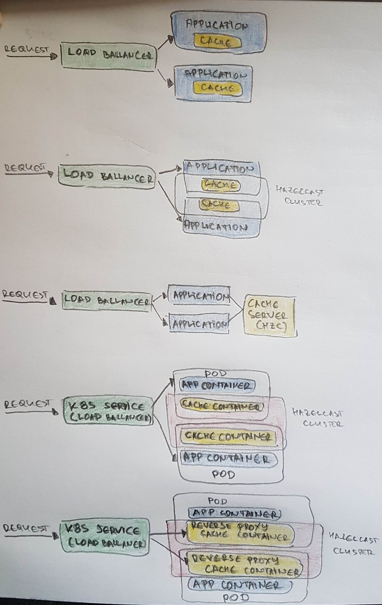

Hazelcast
Serialization and In-Memory formats
- (Hazelcast Custom Serialization, n.d.; Kilden-Pedersen, 2016; Raol, 2019)
- another comparison
- comparison: Comparing Hazelcast 3 Serialization methods with Kryo Serialization and Jackson Smile
- PUT - serialize, GET - de-serialize
| Serialization Type (bytes) | 1M PUT (ms) | 1M GET (ms) | Value Size (bytes) |
|---|---|---|---|
| Java Serializable | 23780 | 40890 | 1230 |
| DataSerializable | 17913 | 20813 | 918 |
| IdentifiedDataSerializable | 18164 | 15937 | 878 |
| Portable | 19064 | 16695 | 901 |
| Kryo | 22204 | 19072 | 957 |
| Jackson Smile | 22055 | 23294 | 1184 |
- While Hazelcast serializes a
DataSerializableit writes the className first and when de-serializes it, className is used to instantiate the object using reflection.IdentifiedDataSerializableTo avoid the reflection and long class namesIdentifiedDataSerializablecan be used instead ofDataSerializable. - Portable is an advanced serialization that supports the following features:
- Support multiversion for the same object type.
- Fetching individual fields without having to rely on reflection
- Querying and indexing support without de-serialization and/or reflection
- !! This improves the query performance a lot. By query I mean Hazelcast Predicate API, where you can write a Predicate on the value and Hazelcast will distribute it to the cluster and return all the matched entries.
ByteArraySerializerorStreamSerializerallow separation of class and its serialization.- In Hazelcast there is a lot of control on the format that is used to store the value using the following 3 in-memory-formats:
- BINARY: the value is stored in serialized form.
- OBJECT: the value is not stored in a serialized form, but stored as a normal object instance.
- CACHED: this is a combination BINARY and OBJECT: the value always is stored in serialized form, but when it is needed, it cached in object form, so it doesn’t need to be deserialized when the object form is needed again.
Some config details
- backup counts - Number of copies across machines
- quorum configuration - minimum Number of machines available in network for the data structure to respond back. (e.g. for example 50 %). This is to gurad against split brain
- reconciliation feature
- check if clusters are in sync, and initiate data transfer
- reconcile periodically with a source system
- hz-link: delta-wan-synchronization
- Resiliency - with rolling update without stopping the system
- Cluster rehydration
- Hot-Restart Feature + (EBS volume) - bring data to memory upon restart or upgrade
- Backup and restore - seed data to another cluster
- Hot-Backup - save data to File
Caching Architectural Patterns (Leszko, 2019)
- patterns:
- embedded
- embdded-distributed
- client-server (Generally used by Redis and Memcached. Hazelcast requires Kubernetes + Hazelcast Helm Chart)
- sidecar
- reverse proxy sidecar 
References
- Hazelcast Custom Serialization. Retrieved January 31, 2021, from https://docs.hazelcast.org/docs/3.0/manual/html/ch03s03.html
- Kilden-Pedersen, N. (2016). Enumerable Ways to Serialize in Hazelcast. In dzone.com. https://dzone.com/articles/enumerable-ways-to-serialize-1
- Leszko, R. (2019). Where Is My Cache? Architectural Patterns for Caching Microservices. In Hazelcast. https://hazelcast.com/blog/architectural-patterns-for-caching-microservices/
- Raol, R. (2019). The ABCs of Building IMDGs. In Medium. https://medium.com/capital-one-tech/building-resilient-imdgs-with-hazelcast-23014d778086